De Latinoamérica figura el presidente de la Asamblea Nacional de Nicaragua , Iván Escobar.
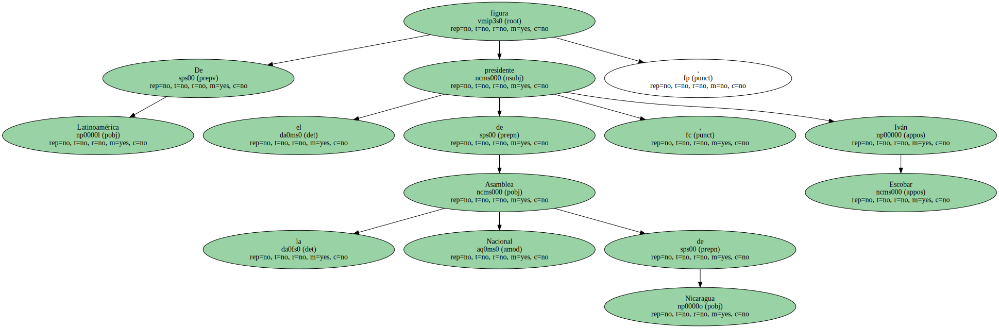Hasta el momento , de Europa sólo han comunicado su asistencia Esperanza Aguirre y el ministro del Asuntos Exteriores de Gran Bretaña , John Battle , además del viceprimer ministro ruso , Viktor Khristenko.
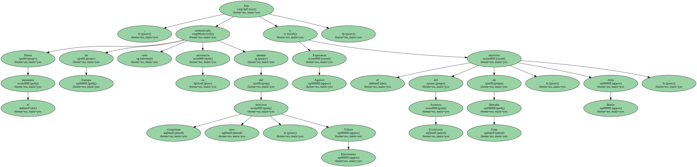Obuchi , de 62 años , sufrió un derrame cerebral en la madrugada del día 2 de abril y , tras permanecer seis semanas en estado de coma , falleció en el hospital Yuntendo de Tokio.
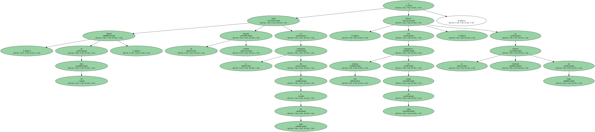Obuchi fue sustituido al frente del gobierno por Yoshiro Mori , quien era el secretario general del partido Liberal Demócrata durante su gobierno.
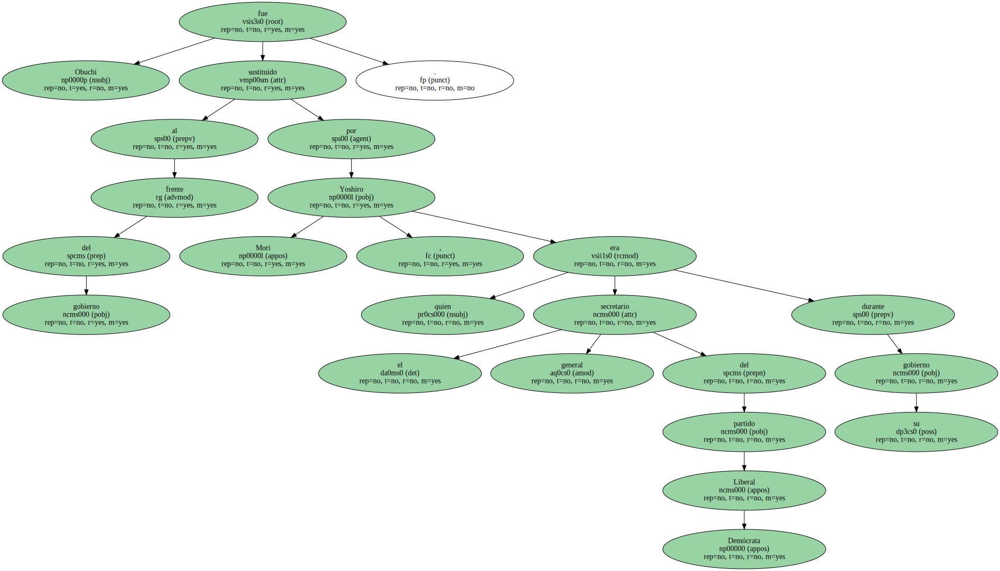El candidato opositor Alejandro Toledo continuó hoy su campaña por el " rescate de la democracia " con un multitudinario mitin en la ciudad de Cañete , 148 kilómetros al sur de Lima , ante unas cinco mil personas que exigían nuevas elecciones.
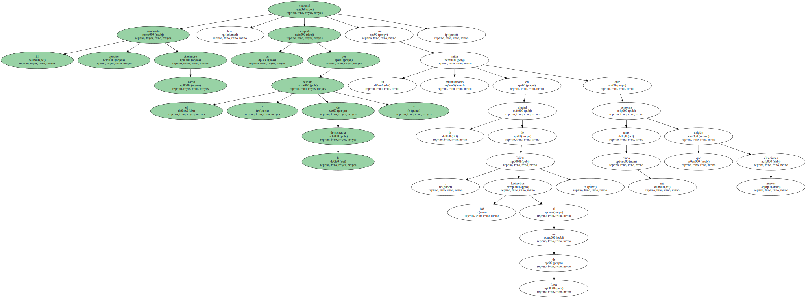Toledo señaló que el Gobierno de Alberto Fujimori tuvo " miedo " de participar en elecciones limpias y por ello hizo " un fraude ".
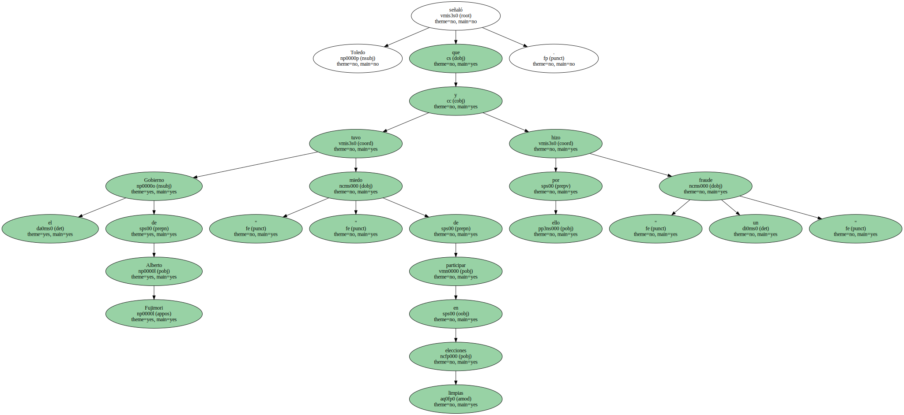Eso es lo que hicieron.
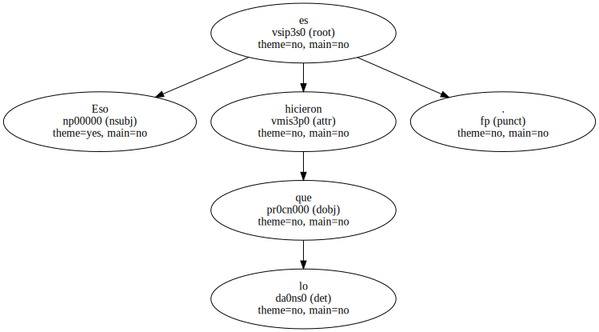El jefe de Estado y candidato a la reelección resultó reelegido para un tercer período de gobierno con el 51,2 por ciento de los votos totales en la segunda vuelta de los comicios presidenciales a la que se presentó el pasado domingo en solitario sin rival ni observadores.
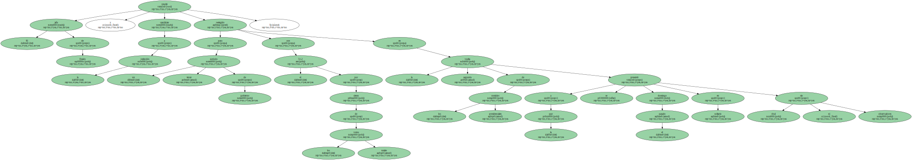Toledo no participó al denunciar que persistía el mismo montaje de fraude que , según señala , se orquestó en su contra en la primera vuelta celebrada el 9 de abril para perpetuar a Fujimori en el poder.

Toledo no participó al denunciar que persistía el mismo montaje de fraude que , según señala , se orquestó en su contra en la primera vuelta celebrada el 9 de abril para perpetuar a Fujimori en el poder.
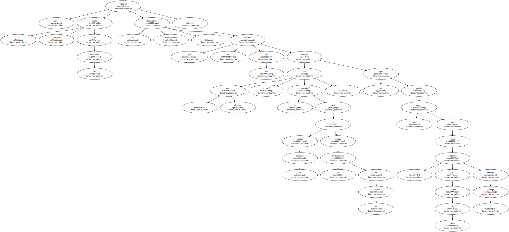Toledo no participó al denunciar que persistía el mismo montaje de fraude que , según señala , se orquestó en su contra en la primera vuelta celebrada el 9 de abril para perpetuar a Fujimori en el poder.
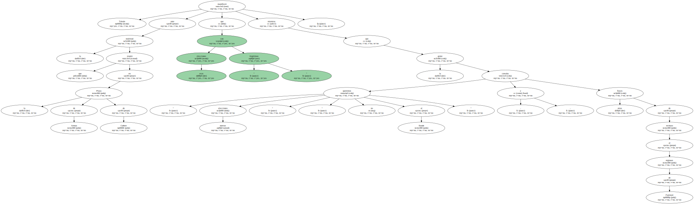Toledo no participó al denunciar que persistía el mismo montaje de fraude que , según señala , se orquestó en su contra en la primera vuelta celebrada el 9 de abril para perpetuar a Fujimori en el poder.
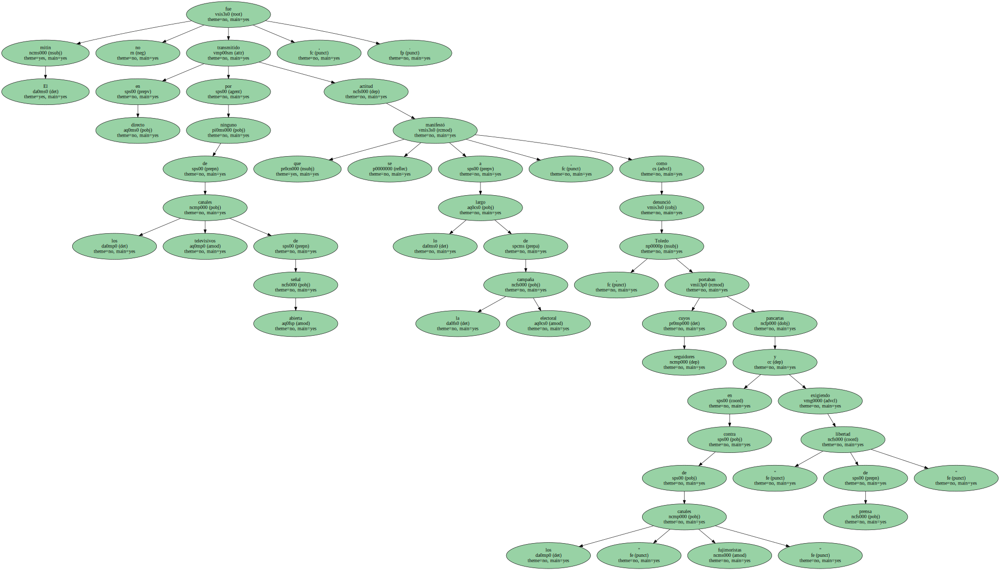Tampoco vigilaron la segunda vuelta de las elecciones los observadores internacionales , que se retiraron del país después que el jurado electoral rechazó su recomendación para aplazar los comicios y corregir las irregularidades en el proceso , ya que pedían más tiempo para evaluar el programa de cómputo de votos utilizado el domingo.
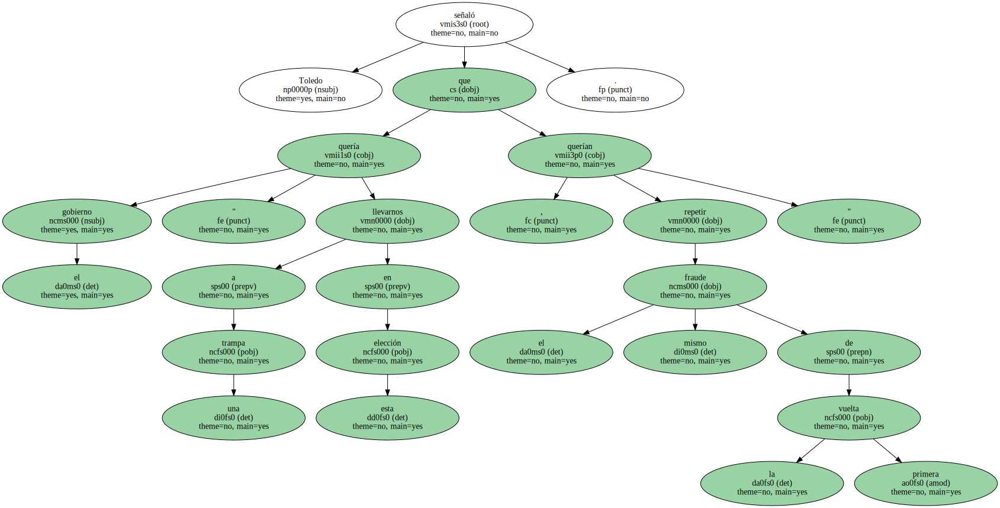Toledo manifestó ante la multitud que reunió en la Plaza de Armas de Cañete que esas elecciones son " ilegítimas " mientras que la gente coreaba " queremos nuevas elecciones " , " no al fraude " , y otras frases de rechazo al régimen de Fujimori.
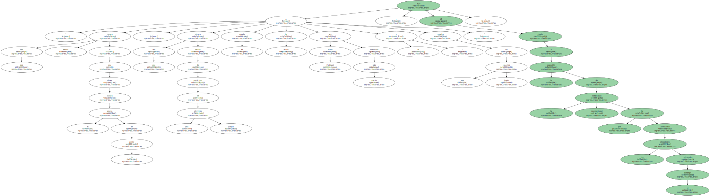El mitin no fue transmitido en directo por ninguno de los canales televisivos de señal abierta , actitud que se manifestó a lo largo de la campaña electoral , como denunció Toledo , cuyos seguidores portaban pancartas en contra de los " canales fujimoristas " y exigiendo " libertad de prensa ".
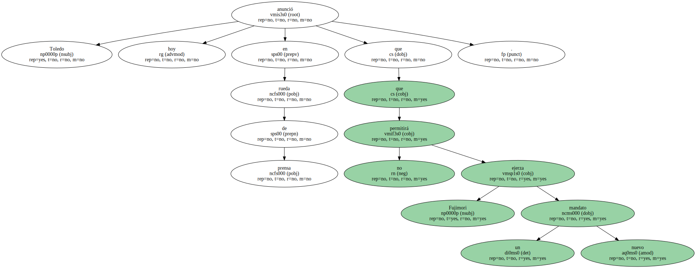El mitin no fue transmitido en directo por ninguno de los canales televisivos de señal abierta , actitud que se manifestó a lo largo de la campaña electoral , como denunció Toledo , cuyos seguidores portaban pancartas en contra de los " canales fujimoristas " y exigiendo " libertad de prensa ".

Toledo señaló que el gobierno " quería llevarnos a una trampa en esta elección , querían repetir el mismo fraude de la primera vuelta ".
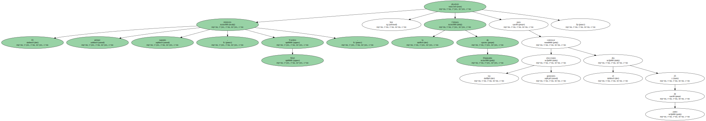" Por qué tienen miedo si dicen que tienen el apoyo de la gente . Por qué tienen miedo de participar en una elección limpia ... El mundo le ha dicho : señor Fujimori sea mucho más caballero y compita en una elección limpia " , dijo al aludir a la reacción de la comunidad internacional que ha cuestionado las elecciones celebradas el domingo.
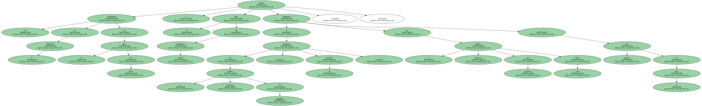Toledo anunció hoy en rueda de prensa que no permitirá que Fujimori ejerza un nuevo mandato.
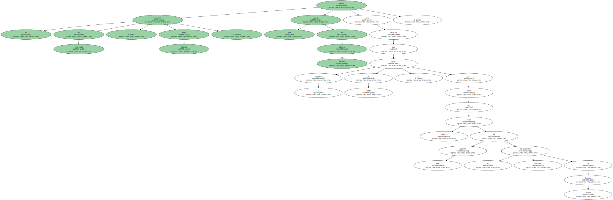" Puedo asegurar que no le vamos a permitir jurar el cargo . Podrá sacar los tanques a las calles , pero tendrá que enfrentarse a más de 18 millones de peruanos " , mantuvo el líder del Partido " Perú Posible ".
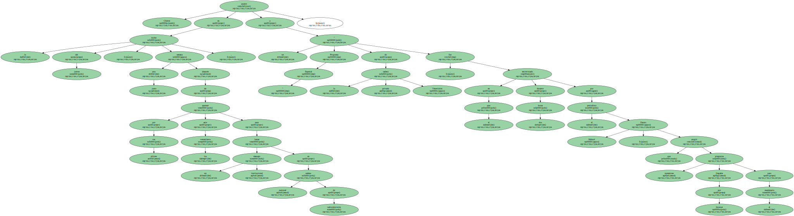El primer ministro japonés , Yoshiro Mori , disolvió hoy la Cámara de Diputados para convocar las elecciones generales el día 25 de junio.
Los documentos de la disolución con la firma de Mori y el sello del emperador Akihito fueron entregados al presidente de la poderosa Cámara del Legislativo , Soichiro Ito , por el ministro Portavoz del gobierno Mikio Aoki , a primera hora de la tarde.
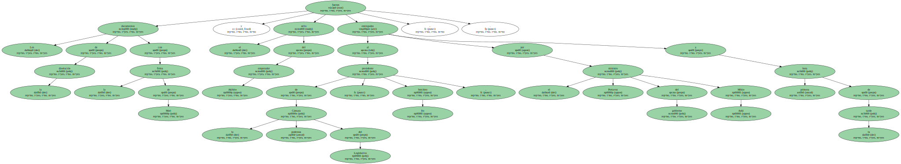El presidente de Venezuela , Hugo Chávez , rompió una semana de silencio absoluto para anunciar que su gobierno trabaja a fondo , a pesar del parón político que ha supuesto el aplazamiento electoral del pasado domingo.
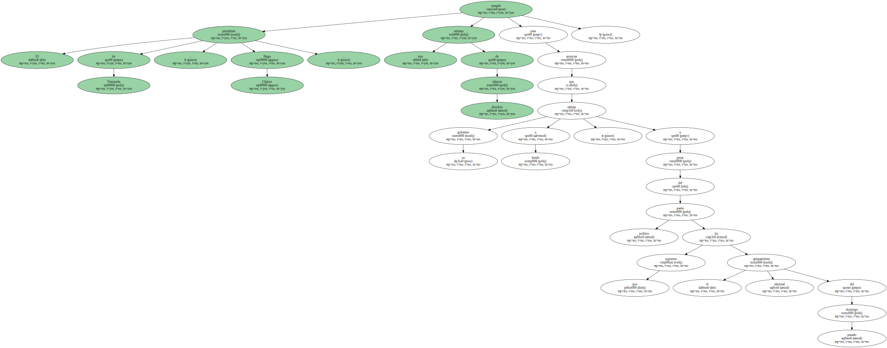Chávez acudió en la noche del jueves , justo una semana después de aparecer por última vez ante los venezolanos para lanzar un mensaje institucional en cadena nacional de radiotelevisión , a un " Programa Especial " de la cadena privada Venevisión , en el que fue entrevistado durante dos horas por el periodista Fausto Malavé , que acogió numerosas preguntas llegadas por Internet para el mandatario.
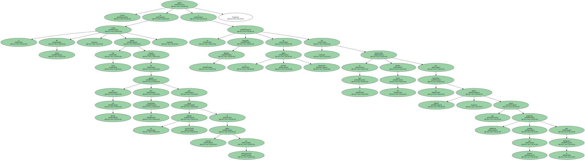" Cuando hablo mucho me critican y si no hablo también ".
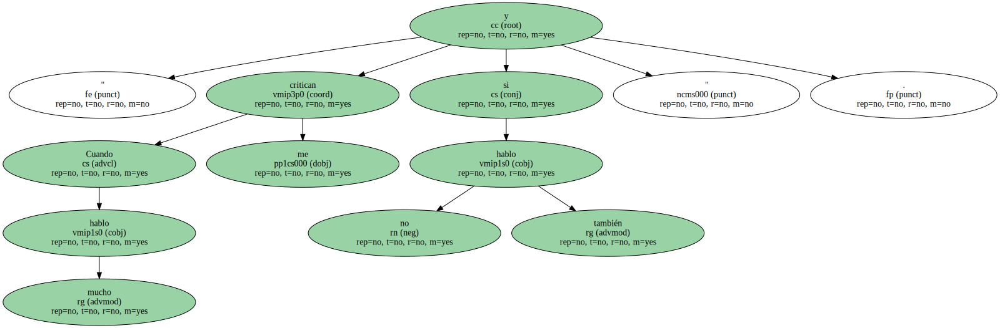